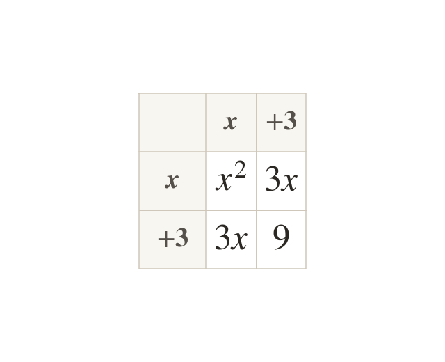
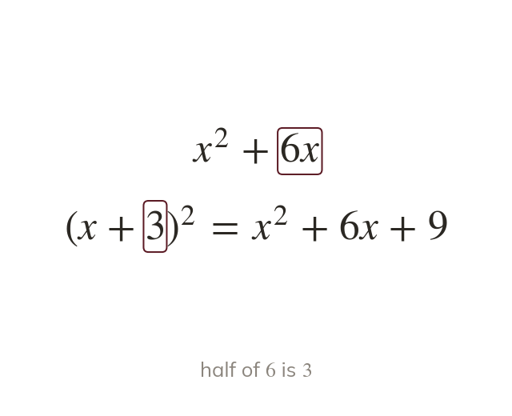
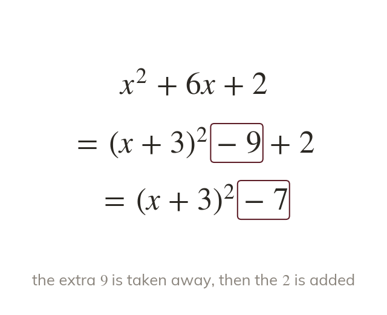
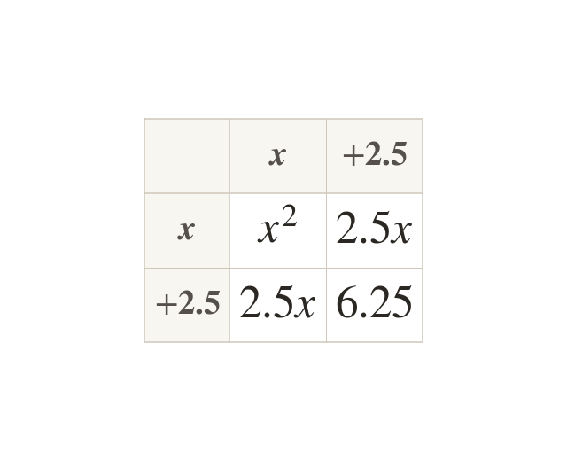
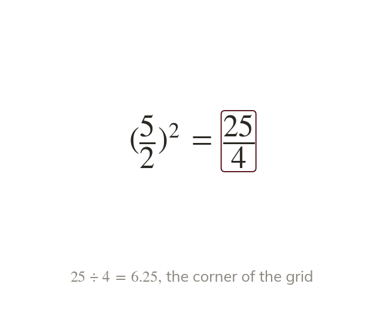
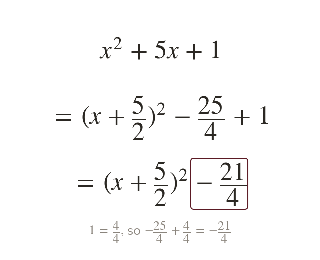

A squared bracket makes the x term
Expanding gives
The is double the in the bracket.
A quadratic such as hides its smallest value. Written as it shows that value at a glance.
Work down the page at your own pace. Write every answer in your book first, then click to check it.
Read each card, then follow the worked examples one step at a time.

Expanding gives
The is double the in the bracket.

The bracket's number is half the coefficient of So comes from

The bracket brings an extra with it. Subtracting the keeps the expression equal.
Pick an answer. If it's wrong, the feedback tells you which mistake it was.
Read each card, then follow the worked examples one step at a time.

Half of an odd number is a fraction. So comes from

The square of is not
Both the top and the bottom are squared.

The constant joins the fraction over a common denominator. So is
Pick an answer. If it's wrong, the feedback tells you which mistake it was.
Finished? Next lesson: 10H.15.2 Completing the Square for ax² + bx + c.
Log in, then search for a code to practise that skill.
Videos, worksheets and more on each part of this lesson.